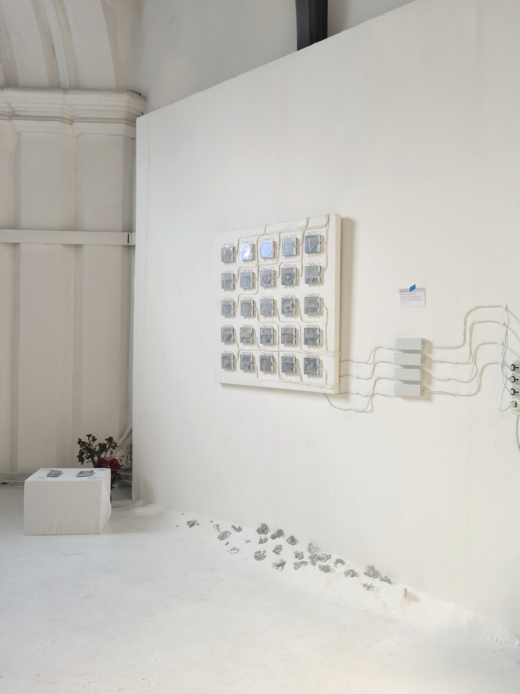
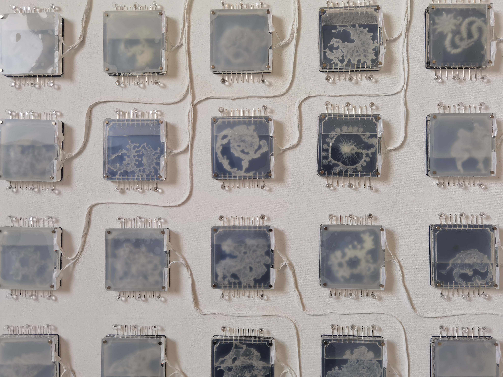

Pixel Of The Sea
2024, 1m×1m
3D printings in acrylic boxes pinned on canvas, turpentine, water, arduino, switchable films, white sand
"Pixel of the Sea" artfully merges physical and digital realms. It features 25 3D-printed virtual organisms submerged in acrylic boxes filled with a water and turpentine mixture on a 1m x 1m canvas. These installations, akin to biological microchips, are overlaid with switchable glass that imitating breathing and changes their visibility, reflecting an aesthetic that blends industrial grid measurements with circuit board designs.
This work is a continuation of the project "The Lens of AI," where AI is visualized as a decomposer in cyberspace, breaking down complex fossil data into simpler digital forms. These fossils, sourced from Folkstone and Charmouth’s coastlines, underpin the work’s exploration of macroscopic and microscopic contrasts and AI’s preferences for structured data. This artwork invites viewers to consider the seamless integration of digital tools in understanding and reconstructing the natural world. Emphasizing themes of "future archaeology" and "archiving," the artwork positions these 3D structures as fossils in sand or meticulously archived specimens in the future, challenging perceptions of what is visible and what remains hidden in our increasingly digital landscape.
Are humans the measure of all things?
We are far removed from the time when Plato first posed this question. As a computational artist, I have long been committed to integrating technology and art, positioning myself between the microscopic and the vast scales, exploring the juxtaposition of different elements and the interweaving of time. I strive to consider, from a de-anthropocentrism perspective, how we can organically shape a future vision alongside all things.
In my previous project "The Lens of AI," artificial intelligence (AI) is envisioned as a digital decomposer, analogous to biological decomposers like fungi and bacteria that break down organic substances into simpler forms. In this video, AI decomposes the complex data structures of fossils, which symbolize ancient, seemingly immutable objects. These fossils, collected from the southern coastlines of Folkstone and Charmouth in the UK, are placed under a microscope camera. As the camera zooms in and out, the creatures, focusing on areas where the camera's clarity is highest, suggest AI's preference for 'clean' and structured data, symbolizing its role in deconstructing complex structures previously deemed indestructible. The creatures cling to and animate the fossils, making them appear to twist and struggle, eventually disintegrating into a digital sea and breaking down into atomized pixels.
This project prompted a renewed exploration into the concept of measurement. I visualized my artistic territory as a square canvas, with its side length representing a standardized unit within any given space. Accordingly, I encapsulated the AI-generated decomposer organisms within a 10cm by 10cm specimen box, positioning it on a 1m by 1m canvas. The intent is for the work to function as a foundational unit for constructing larger forms, embodying a sense of order, elegance, and potential for expansion. This modular approach suggests a framework that is standardized yet versatile, allowing continuous development.

